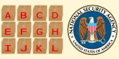
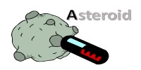

| << Previous Article | Next Article >> |
| Posted on March 04, 2017  NSA Easter Egg Puzzle A puzzle to determine the better strategy to hunt for Easter Eggs in sealed boxes. | Posted on October 18, 2014 Red/Black Gambling Game If you draw cards from a shuffled deck, earning $1 for every black card turned over, and losing $1 for every red card, when should you stop? | Posted on April 27, 2013  Broken Keyboard Turn an asteroid into a steroid with a broken keyboard. | Posted on December 26, 2013 Hiding from monsters using Corinthian columns How to hide from a laser wielding monster (riding on a train) using a Corinthian column. |